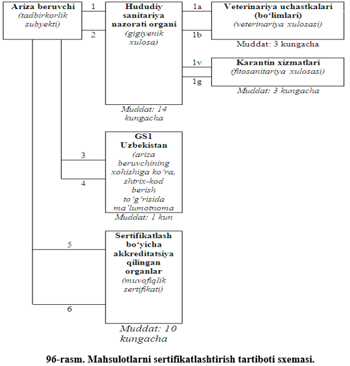
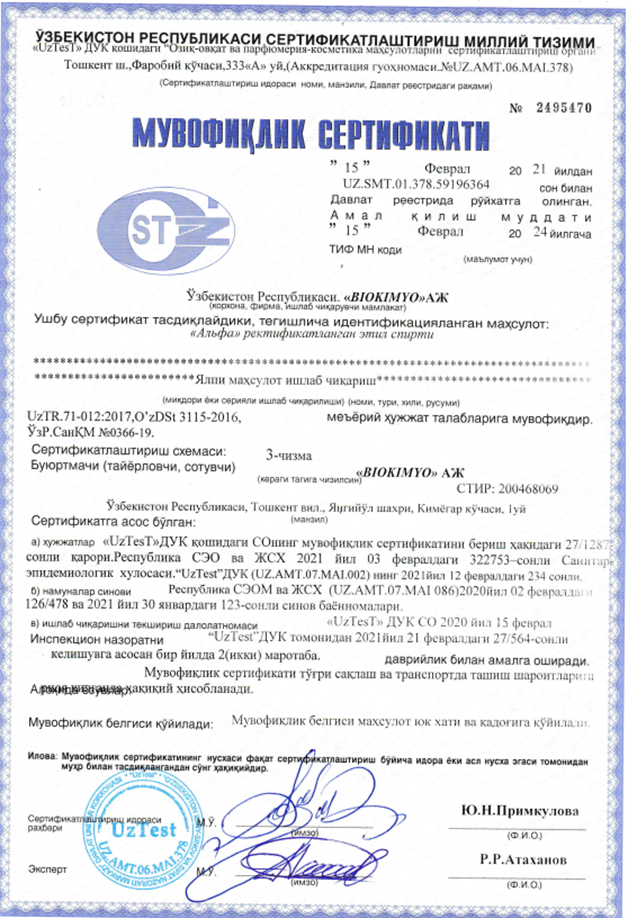
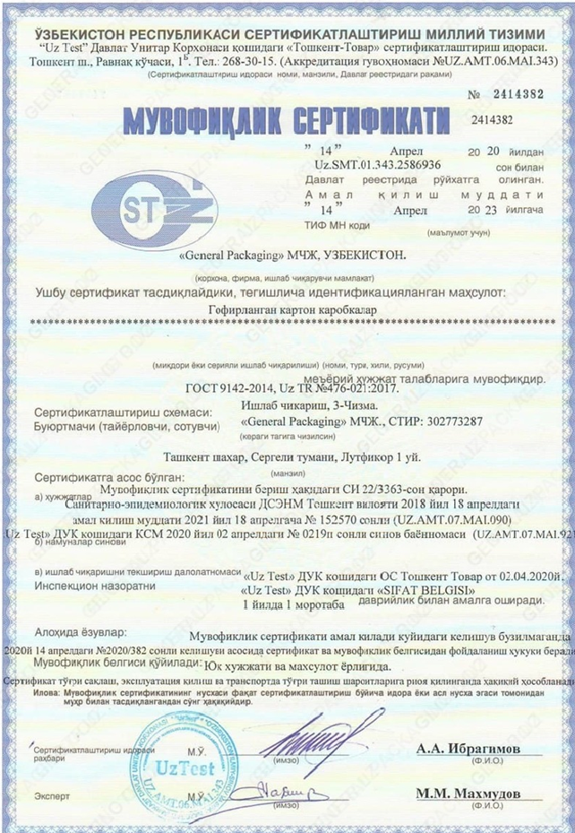
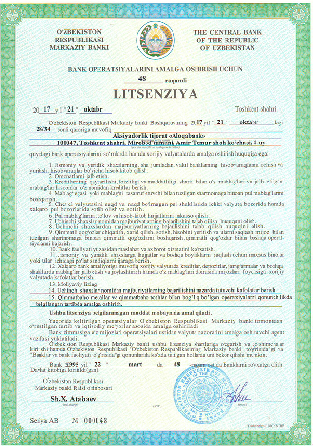
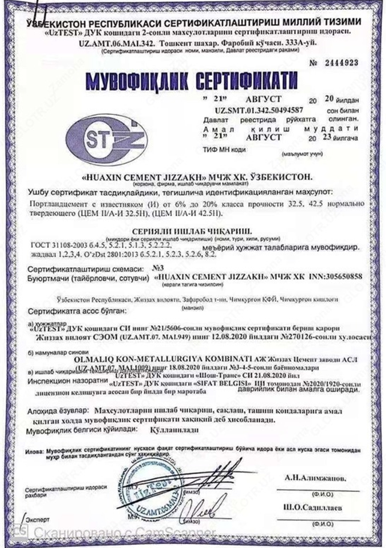
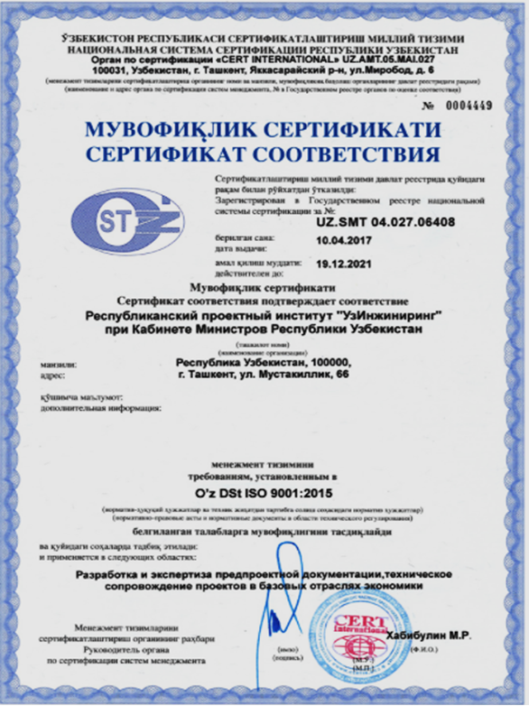

Mashgʻulotning maqsadi: Sertifikatlashtirish, uning maqsadi va vazifalari, amalga oshirish
tartib-qoidalari, sertifikatlashtirish sxemalari bilan tanishish.
Sertifikatlashtirish tushunchasi keng ma’noda uchinchi tomon tarafidan o‘tkaziladigan texnikaviy
me’yorga, ish uslubiga, qoidalariga muvofiqligini qamrab olgan har qanday tekshiruvdir.
Sertifikatlashtirish – bu uchinchi tomon tarafidan bajariladigan ishlar ketma-ketligi
bo‘lib, bunda
mahsulot, jarayon yoki xizmatning qo‘yilgan talablarga muvofiqligi yozma ravishda tasdiqlanadi.
Sertifikatlashtirishni tayyorlash, o‘tkazish va muvofiqlik sertifikatlarini berish tartibi O‘z RH 51
-
062 da aniqlangan.
O‘z DSt 51 - 95 tomonidan muvofiqlik milliy belgisi kiritilgan.
Mahsulotlarni, sifat tizimlari va ishlab chiqarishlarni sertifikatlashtirish ishlarini
akareditlangan
muvofiq idoralar amalga oshiradi. Akkreditlangan idorani bo‘lmagani taqdirda uni sertifikatlashtirish
bo‘yicha milliy idora hal qiladi. Sertifikatlashtirish sinovlarini akkreditlangan sinov laboratoriyalari
(markazlari) amalga oshiradi.
Sertifikatlashtirish, akkreditlash va tekshirishni o‘tkazish bo‘yicha xarajatlarni so‘rovchilar
to‘laydilar. Haq to‘lash O‘z RH 51-032-94 da o‘rnatilgan tartib bo‘yicha shartnoma orqali amalga
oshiriladi. Sertifikat-lashtirish, akkreditlash va tekshirish natijalari bo‘yicha appelyatsiyalarni
ko‘rib chiqishni O‘zRH-026-94 ga muvofiq sertifikatlashtirish idorasi tomonidan tuzilgan komissiya
amalga oshiradi.
Sertifikatlashtirishning maqsad va vazifalari:
- odamlarning hayoti, sog‘lig‘i, yuridik va jismoniy shaxslarning mol-mulki hamda atrof muhit uchun
xavfli bo‘lgan mahsulotlar realizatsiya qilinishini nazorat etib borish;
- mahsulotlarning jahon bozorida raqobat qila olishini ta’minlash;
- mamlakat korxonalari, qo‘shma korxonalar va tadbirkorlar xalqaro miqyosdagi iqtisodiy,
ilmiy-texnikaviy hamkorlikda va xalqaro savdo-sotiqda ishtirok etishlari uchun sharoit yaratish;
- iste’molchini tayyorlovchining (sotuvchining, ijrochining) vijdonsiz-ligidan himoya qilish;
- mahsulot tayyorlovchisi (sotuvchisi, ijrochisi) ta’kidlagan sifat ko‘rsatkichlarini tasdiqlash
maqsadlarida amalga oshiriladi.
Sertifikatlashtirishni o‘tkazish uchun umumiy qoidalar o‘rnatiladi. Bunday qoidalar majburiy va
ixtiyoriy sertifikatlashtirishni tashkillashtirish va o‘tkazishda qo‘llaniladi. Bu qoidalar
mamlakatimizda va xorijda tayyor-langan barcha sertifikatlashtirish obyektlariga nisbatan tadbiq
etiladi.
Sertifikatlashtirishni o‘tkazish tartibida sertifikatlashtirish amallarining majmuini tashkil
etuvchi
harakatlarning navbati o‘rnatiladi. Bu tartib va bir turli mahsulotni sertifikatlashtirish tarzi
sertifikatlashtirish bo‘yicha idoraning hujjatlarida uni akkreditlashda o‘rnatiladi. Idorada
sertifikat-lashtiriladigan mahsulotga me’yoriy hujjatlar va sinash usullari, shuningdek sinashlarni
o‘tkazish uchun laboratoriyalar mavjud bo‘ladi [1].
O‘zbekiston Respublikasi sertifikatlashtirish milliy tizimida mahsulotni sertifikatlashtirish quyidagi
jarayonlarni o‘z ichiga oladi:
a) sertifikatlashtirish idorasiga sertifikatlashtirish to‘g‘risida so‘rovnoma berish va uni ko‘rib
chiqish;
b) sertifikatlashtirishga taqdim etilgan mahsulotga oid me’yoriy hujjatni va so‘rovnomaga ilova
qilgan
boshqa hujjatlarni tahlil qilish;
v) so‘rovnoma bo‘yicha qaror qabul qilish;
g) sinovlar dasturini tayyorlash va tasdiqlash (6 va 9-sxemalardan tashqari);
d) namunalarni identifikatlash (aynan o‘xshashligini aniqlash), tanlab olish va laboratoriyaga olib
kelish (6 va 9-sxemalardan boshqa);
e) namunalarni akkreditlangan sinov laboratoriyasida sinashni bajarish (6 va 9-sxemalardan boshqa);
j) mahsulotni ishlab chiqarish holatini tekshirish (sertifikat-lashtirishning 3, 4 va 5-sxemalari
uchun);
z) sifat tizimini baholash (5 va 6-sxemalari uchun);
i) mahsulotning muvofiqligi to‘g‘risida deklaratsiya yozish (9-sxema);
k) olingan natijalarni tahlil qilish, muvofiqlik sertifikatini berish yoki uni berishdan voz
kechish;
m) muvofiqlik sertifikatini O‘zbekiston Respublikasi sertifikat-lashtirish milliy tizimi Davlat
reestrida ro‘yxatdan o‘tkazish.
Sertifikatlashtirishga taqdim etilgan mahsulot me’yoriy hujjatida gigienik, veterinariya,
fitosanitariya
yoki ekologik talablar mavjud bo‘lgan-da sertifikatlashtirish idorasi gigienik va veterinariya
ekspertizalarini, fitosanitariya tekshiruvini o‘tkazish va ekologik sertifikatlashtirish zarurligini
aniqlaydi. Mazkur amallar sertifikatlashtirish sinovlari bilan bir vaqtda o‘tkazilishi mumkin va
so‘rovchiga muvofiqlik sertifikatini berishdan avval, bu amallar tegishli hujjatlar berilishi bilan
tugallanishi lozim.
Sertifikatlashtirish idorasi tadbirkorlik sub’ektlarining yozma arizasiga muvofiq,
sertifikatlashtirishni o‘tkazishda davlat sanitariya nazorati idora-laridan, davlat veterinariya
nazorati idoralaridan va o‘simliklar karantini bo‘yicha davlat idoralaridan, shuningdek tabiatni
muhofaza qilish davlat idoralaridan barcha zarur xulosalarni olishga oid agentlik xizmatlarini
ko‘rsatishga haqlidir. Bunda namunalarni tog‘ri ajratib olish va ularni tegishli davlat idoralariga
berish vazifasi, shuningdek mas’ullik sertifikatlashtirish idorasiga yuklatiladi.
Chetdan kelitiriladigan mahsulotni sertifikatlashtirishda quyidagi hujjatlar taqdim etilishi lozim:
- ishlab chiqariladigan mahsulotga me’yoriy hujjat nusxasi (amalda bor bo‘lgan taqdirda);
- mahsulot yorlig‘i namunasi yoki mahsulot to‘g‘risida ma’lumot;
- tovarga qo‘shib jo‘natiladigan hujjat nusxasi. Bu nusxaga mahsulotning O‘zbekiston Respublikasi
bojxonasi hududiga kelganligi to‘g‘risidagi belgi qo‘yilgan bo‘lishi shart;
- amalda bor bo‘lgan taqdirda, davlat sanitariya nazorati idorasining laboratoriyasida o‘tkazilgan
sinovlarning natijalari yozilgan gigienik sertifikat va me’yoriy hujjatda belgilangan boshqa talablar
to‘g‘risidagi ma’lumotlar nusxasi (veterinariya va fitosanitariya xulosalari, ekologik sertifikat).
Sertifikatlashtirish protsedurasiga xorijiy yoki xalqaro idoralar bergan muvofiqlik sertifikatlarini
tan
olish, shuningdek berilgan appelyatsiyalarni ko‘rib chiqish, sertifikatlashtirishga so‘rovnomani ko‘rib
chiqish va qaror qabul qilish, mahsulotga me’yoriy hujjatni tahlil qilish, sinovlar dasturini ishlab
chiqish, namunalarni identifikatlash va ajratib olish, sertifikatlashtirish sinovlarini o‘tkazish,
ishlab chiqarish holatini baholash, muvofiqlik sertifikatini rasmiylashtirish ham kiradi [1].
Sertifikatlashtirish bo‘yicha faoliyatni xalqaro talablarga mos keltirish munosabati bilan
“Muvofiqlikni
tasdiqlash” tushunchasi kiritilgan. Bu tushunchaga mahsulotni sertifikatlashtirish va ishlab chiqaruvchi
tomonidan muvofiqlikni deklaratsiyalash faoliyati kiradi (O‘zbekiston Respublikasi Vazirlar
Mahkamasining №318-sonli qarori (06.07.2004 yil) ga muvofiq).
2013 yil 4 oktabrda “Muvofiqlikni baholash” to‘g‘risida O‘zbekiston Respublikasi qonuni qabul
qilindi.
Bu qonunning maqsadi muvofiqlikni baholash sohasidagi munosabatlarni tartibga solishdan iborat.
Mahsulotlarni certifikatlashtirish tartiboti sxemasi quyidaga 96-rasmda keltirilgan.

96-rasmga izohlar:
1. Ariza beruvchi zarur hollarda gigiyenik xulosa olish uchun hududiy sanitariya nazorati organiga
zarur
hujjatlarni ilova qilgan holda ariza beradi.
Hududiy davlat sanitariya nazorati organi belgilangan tartibda joyiga borgan holda laboratoriya
sinovlari o‘tkazish uchun mahsulotlardan namuna oladi va obyektni tekshiradi.
1a. Chorva mahsulotlari uchun hududiy sanitariya nazorati organi ariza beruvchidan hujjatlar olingan
kundan keyingi kundan kechikmasdan tuman (shahar) veterinariya xizmati organiga buyurtmanoma jo‘natadi.
1b. Veterinariya xizmati organi uch kun muddatda hududiy sanitariya nazorati organiga veterinariya
xulosasini yoki xulosa berishni rad etishga sabab bo‘lgan aniq qonun hujjatlari normalarini ko‘rsatgan
holda yozma javob yuboradi.
Veterinariya xizmati organi 20 kungacha izolatsiyalash-cheklash (karantin) choralarini belgilash
huquqiga ega. Bunda veterinariya xulosa-sini berish tartiboti karantin muddati tugagunga qadar to‘xtatib
turiladi.
1v. O‘simlik mahsulotlari uchun hududiy sanitariya organi ariza beruvchidan hujjatlar olingan kundan
keyingi kundan kechikmasdan tuman (shahar) o‘simliklar karantini davlat xizmati organiga buyurtmanoma
jo‘natadi.
1g. O‘simliklar karantini davlat xizmati organi ikki kun muddatda fitosanitariya xulosasi yoki
salbiy
xulosa beradi.
2. Laboratoriya sinovlari, shuningdek veterinariya hamda fitosanitariya xulosalaridan ijobiy natija
olinganda, hududiy sanitariya nazorati organi ariza beruvchiga gigiyenik xulosa beradi.
3,4. Ariza beruvchi o‘z xohishiga ko‘ra, tashkilot va ishlab chiqaradigan mahsuloti shtrixli kodda
foydalaniladigan tovar kodini olish uchun "GS1 Uzbekistan" ga murojaat qilishi mumkin.
5. Ariza beruvchi muvofiqlik sertifikati olish uchun sertifikatlash bo‘yicha akkreditatsiya qilingan
organga zarur hujjatlarni ilova qilgan holda ariza taqdim etadi. (Ariza gigiyenik xulosa olish uchun
beriladigan ariza bilan bir vaqtda berilishi mumkin).
6. Sertifikatlash bo‘yicha akkreditatsiya qilingan organ 15 ish kunidan ortiq bo‘lmagan muddatda
muvofiqlik sertifikati yoki aniq qonun hujjatlari normalarini ko‘rsatgan holda yozma rad javobini
beradi.
Sertifikatlashtirish tartibotining umumiy muddati 10 kundan 30 kungachani tashkil etadi.
Sertifikatlashtirish tizim o‘zining sertifikatlashtirish idorasiga ega bo‘lib, bu idora
sertifikatlashtirish jarayonidagi barcha tashkiliy va rahbariy vazifalarini amalga oshiradi.
Sertifikatlashtirish idorasi sertifikatlashtirish jarayonida ishtirok etuvchi sifatida uchinchi
tomonning hamma ishlarini bajarishi lozim.
Sertifikatlashtirish idorasining asosiy vazifalari quyidagilardan iborat [3]:
– tizim doirasida sertifikatlashtirishni o‘tkazish tartibini ishlab chiqish;
– attestatlash va sertifikatlashtirish sinovlarini o‘tkazish uchun sinov laboratoriyasi tarkibidagi
ishonchli vakillarining ro‘yxatini tuzish va boshqarish;
– korxona – tayyorlovchilarning mahsulot sifatini ta’minlovchi tizimini baholash;
– sertifikatlashtirish tizimlariga korxonalarni ruxsat etish qarorini qabul qilish;
– muvofiqlik sertifikatini berish va muvofiqlik belgisi bilan mahsulotni belgilash (tamg‘alash)
huquqiga
ega bo‘lgan holda litsenzion shartnoma tuzish;
– sertifikatlashtiriluvchi mahsulotning ro‘yxatini boshqarish;
– sertifikatlashtirilgan mahsulotning sifati haqidagi da’volashuvini ko‘rish.
Ko‘pgina rivojlangan mamlakatlarda sertifikatlashtirish idorasi vazifasini mamlakatda obro‘si baland
bo‘lgan va tan olinuvchi xususiy tashkilotlar, jumladan Fransiyada, Buyuk Britaniyada, Amerika Qo‘shma
Shtatlarida yirik sug‘urta kompaniyalari o‘z zimmasiga olishlari mumkin. Bu holda ularning milliy
akkreditlash tizimlarida akkreditatsiyadan o‘tishlari maqsadga muvofiq.
Sertifikatlashtirish ishlarini bajaruvchi va tizimning ajralmas qismi - bu uchinchi tomondir,
uchinchi
tomon sifatida esa asosan akkreditlangan sinov laboratoriyalari xizmat qiladi. Ularning vazifalari
sinovlar o‘tkazish, bayonno-malarni rasmiylashtirish va sinov natijalarining haqqoniyligini
ta’minlashdan iborat.
Topshiriq. Guruh talabalari kichik guruhlarga boʻlingan holda berilgan tarqatma
materiallardan
foydalangan holda quyidagi savollarga javop topib yozishadi va himoya qilishadi.
Savollar:
1. Sertifikatlashtirish deganda nimani tushunasiz? U qanday koʻrinishlarda amalga oshiriladi?
2. Sertifikatlashtirishning maqsad va vazifalari nimalardan iborat?
3. O‘zbekiston Respublikasi sertifikatlashtirish milliy tizimida mahsulotni sertifikatlashtirish
qanday
jarayonlarni o‘z ichiga oladi?
4. Chetdan kelitiriladigan mahsulotni sertifikatlashtirishda qanday hujjatlar taqdim etilishi lozim?
5. Mahsulotlarni sertifikatlashtirish tartiboti sxemasini tushuntirib bering.
6. Sertifikatlashtirish idorasining asosiy vazifalari nimalardan iborat?
7. Sertifikatlashtirish milliy tizimi haqida ma’lumot bering.
8. Berilgan namunadagi muvofiqlik sertifikatiga izoh bering.





Mavzuni takrorlash uchun savollar:
1. Sertifikatlashtirish deb nimaga aytiladi?
2. Muvofiqlik deganda nimani tushunasiz?
3. Muvofiqlikni baholashning qanday turlari bor?
4. Majburiy va ixtiyoriy sertifikatlashtirish deganda nimani tushunasiz?
5. Sertifikatlashtirish boʻyicha milliy idora va uning vazifalari haqida ma’lumot bering.
6. Muvofiqlik sertifikatida qanday ma’lumotlar qayd etiladi?